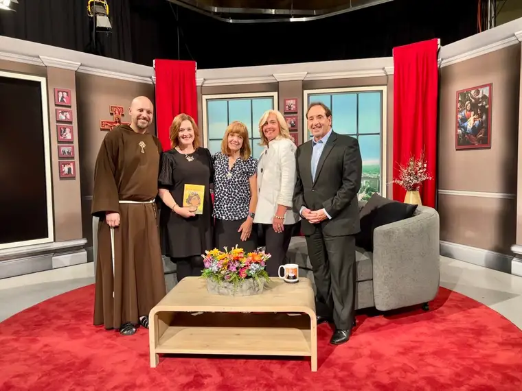

Roxane and Patti (middle) with Joy and Jim Pinto (right) and Fr. John Paul Mary (left)
As my co-author Patti Armstrong and I were leaving the EWTN studios’ green room in Irondale, Alabama, recently, having concluded an interview for the “At Home with Jim and Joy” show, Joy Pinto looked at us sternly, one finger pointing emphatically—but in the most motherly way possible—“Remembah,” she said, her New Jersey origins detectable, “it’s not the end of they-ah stawry!”
Her words and insistent expression were coming from the depths of her soul, and I knew to hang on tight to each.
Both before and after the show, we’d been conversing with this dynamic duo about the travails of raising Catholic children in today’s world, and how easily discouraged we can become when our hopes for them seem dashed. The topic of the show, after all, was about how to cope when loved ones leave the Faith, and the Pintos were no strangers to children “taking a detour,” as they’d put it.
Our hosts understood the plight we were exposing to the world. In ways unique to their family, they’d been there, too. Despite their fervent leadership in pro-life ministry, they’d experienced unplanned pregnancies within their fold. Surely, the Devil laughed at what appeared a conclusive fail on their parts.
And it might have been, without the reality of God and his mercy. Continuing her story, Joy shared how, in a moment of grief, she found herself succumbing to feelings of defeat, slipping into a place of despair.
Just then, however, the heavens seemed to interrupt her dark thoughts. She sensed two angels conversing about the situation that had her tormented, one saying to the other, “Oh, she doesn’t know…” Know what? Joy wondered. “Right,” the second angel chimed in. “She thinks this is the end of the story!”
Realizing now that this moment was just that—a moment in time—and that other, more hopeful, moments might come, Joy stood up, supernaturally fortified and renewed in hope. Soon, she would see what had been lost to her in that dip into darkness: a new, young relative who would become endeared to her and Jim; another who would go through a conversion process; a succession of second chances, bound together by God’s grace.
“Payday eventually came!” Joy declared happily. God had heard their prayers, after all, and what seemed like a loss became a victory. Now, Joy wanted to remind Patti and me that when we feel like the world has won, that’s exactly the time at which God stands ready to charge in with grace—if we let him. It’s the time we are asked to hand over our worries into his heart, where they should have been all along.
I think of her wise words now in connection with our ministry here in Fargo-Moorhead, specifically our sidewalk advocacy at the Red River Women’s Clinic. If only we had more chances to talk to the women seeking abortion as a solution to their problems, I might say, “You think this is the end of the story, sweet child, but your story has just begun!” Or, “The story of your child’s life has barely begun. Please don’t shred it before it’s had a chance to be told!”
Our attempts to reach those who come from broken situations can feel like an exercise in futility. It demands that we question whether our faithfulness is at its optimal level. Do we really trust God? Or are we relying on our own will and ways only?
A few weeks before our visit to EWTN, I had the thrill of witnessing what some advocates believe to be the first confirmed “save” at the Moorhead abortion facility location; the first in our area since Roe vs. Wade fell. That’s a long time to wait for a victory—about a year. But it happened.
The mom, wearing a medical facemask, had come out of the facility without a bag of post-abortion instructions and pills. When one of the advocates called out to her, her response was muffled. “I can’t hear you!” he yelled. As she got into the waiting car, which came past us, mask now removed, she said through the open window, “I didn’t do it.”
“You didn’t?!” I asked in disbelief. “No,” she answered, smiling with relief as the car advanced toward the street, two adorable, bright-eyed children chattered happily from the backseat.
If you think it’s the end of the story, think again. God died on a cross, but he rose three days later. Yes, life can seem impossible at times, but wait for it, because truly, his holy will for the world will triumph in time!
[Note: I write about my experiences praying for the end to abortion at the sidewalk abutting the Red River Valley’s lone abortion facility for New Earth magazine — the official news publication of the Fargo Diocese. I hope you find “Sidewalk Stories” helpful in understanding the truth about abortion and how it plays out tragically in our corner of the world. The preceding ran in New Earth’s September 2023 issue.]